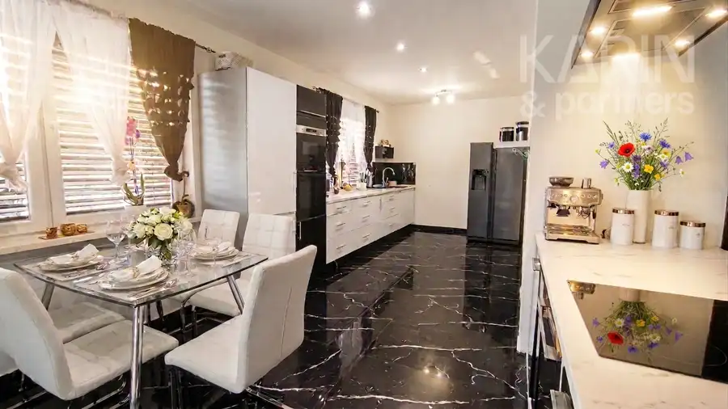
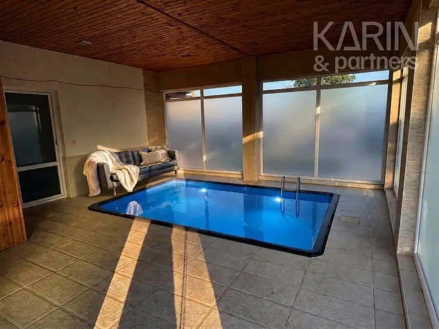
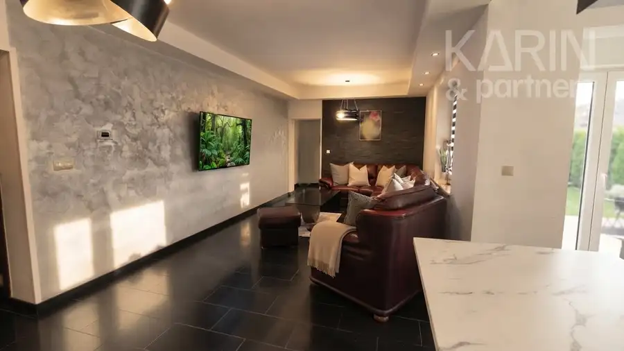
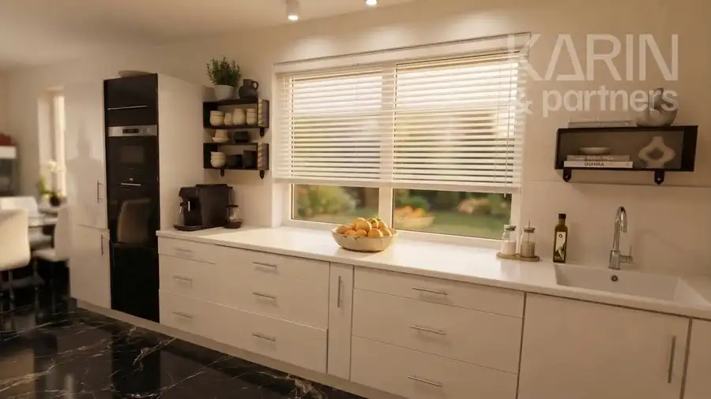
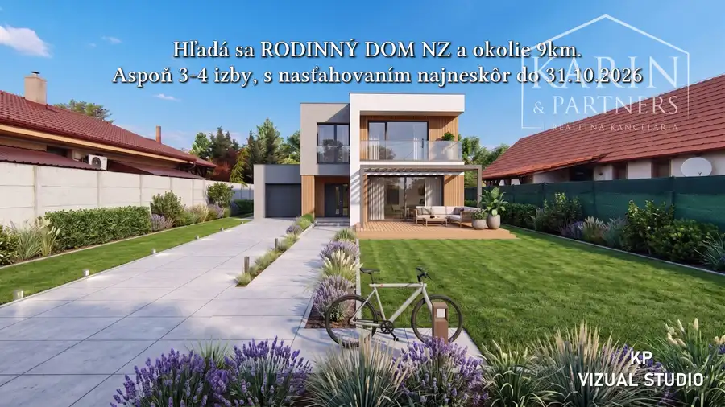
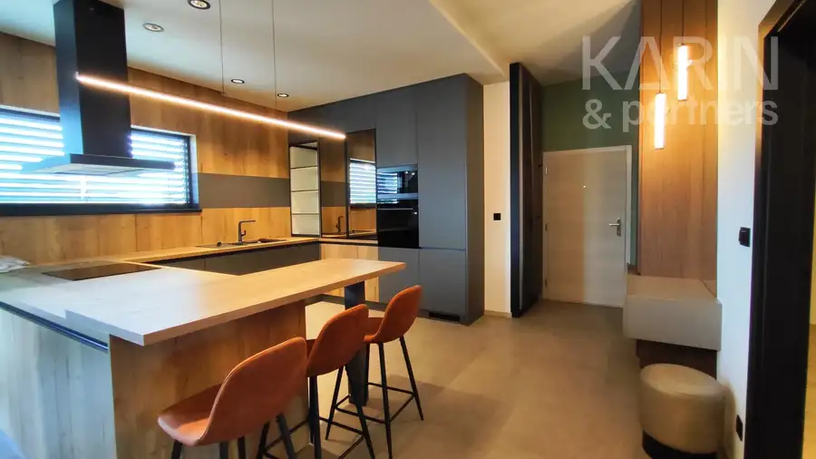
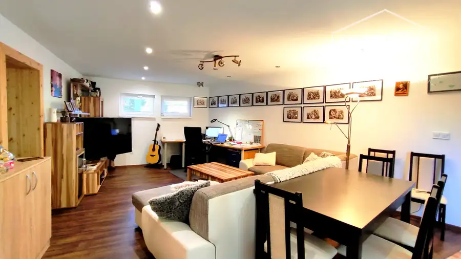

EXKLUZÍVNE: Hacienda - RD 4i+2i dvojgeneračný, Bazén, Vnútorný bazén, Krytá párty terasa
Nové Zámky




- Plocha290 m²
- StavKompletná rekonštrukcia
- VlastníctvoOsobné
O nehnuteľnosti
HACIENDA-RD 4i+2i dvojgeneračný | Bazén 66m2 | Krytý bazén | Veľká párty terasa | Vydláždený dvorZNÍŽENÁ CENA !EXKLUZÍVNE iba u NÁS: LUXUSNÁ HACIENDA - Dva samostatné stojace rodinné domy, jeden 4i a druhý 2i, pripravené na dvojgeneračné samostatné bývanie, Vonkajší veľký bazén, Krytá párty terasa, Vnútorný bazén, vonkajšie jazierko s rybičkami a plus krásne prírodné scenérie v udržiavanej okrasnej záhrade s výmerou cca. 800m2. Táto výnimočná nehnuteľnosť postavená na krásnom prevažne rovinatom nadštandardnom pozemku 2135m2, ktorá Vás okamžite pri vstupe očarí nečakaným pocitom vysneného domova, dokonale zmiešaným s luxusom, vyšperkovaný absolútnym relaxačným pokojom nevšednej rajskej oázy a výhodami celoročného dovolenkového sídla /v dnešnom význame HACIENDA/. Celý pozemok je navyše precízne obostavaný zo všetkých strán dostatočne vysokým betónovým plotom, ktorý zabezpečuje absolútne bezpečie, súkromie a intimitu v areáli celej haciendy.LOKALITA: Semerovo, len 15km od Nových Zámkov v obci s kompletnou občianskou vybavenosťouZÁKLADNÉ PARAMETRE:- Celková výmera pozemku 2135m2- Zastavaná plocha RD1 + RD2 spolu je 337m2- Dve stavby samostatných rodinných domov /RD1 a RD2/ a veľký vonkajší bazén cca 66m2- Podlahová plocha spolu cca.250m2 + 50m2 krytá terasa NA PREDAJ: Luxusná hacienda koncipovaná ako dva samostane stojace prízemné rodinné domy, s dvomi bytovými jednotkami so samostatnými vchodmi a nasledovnými parametrami1. / RD1/ HLAVNÁ STAVBA 4izbový RD:- zastavaná plocha 217m2- podlahová plocha 190m2- kompletná rekonštrukcia 2021- 3 izby, obývacia hala, bazén, kúpeľňa, WC , pod strechou integrovaná terasa cca.15m2 - v jednej izbe je prevádzkovaný vnútorný zapustený laminátový bazén cca. 4,3m x 3m s hĺbkou 1,5mĎAĽŠIE TECHNICKÉ PARAMETRE /RD1/:- Materiál stavby: tehla, tvárnice, krov valbový, strešná krytina: kvalitná pálená škridla korýtková- pôvodná stavba cca.1980, posledná rekonštrukcia s kolaudáciou 2021- VIS: elektrina, obecná voda, plyn- kúrenie podlahové, plynový kotol UK zn.Immergas- dom je odkanalizovaný do žumpy- kúpeľňa umývadlo, velký sprchový priestor, veľká masážna vaňa- v chodbe je vstavaný RollDoor- podlahy v izbách veľkoplošné laminátové parkety, ostatné velkoformátové keramické dlažby 2. / RD2/ VEDĽAJŠIA STAVBA 2izbový RD + Veľká krytá párty terasa cca.50m2- kolaudácia 2021- samostatný vstup- zastavaná plocha 120m2- podlahová plocha 100m2, z toho výmera krytej terasy 50m2 - krytá terasa je z troch strán obstavaná, štvrtá strana od dvora je otvorená s výhladom na bazén, je na murovaných stojkách, podlaha z keramickej dlažby- VIS: elektrina, obecná voda, plyn- kúrenie s radiátormi, samostatný plynový kotol UK zn.Immergas- dom je odkanalizovaný do žumpy- kúpeľňa s umývadlom, sprchovým kútom a WC- podlahy veľkoplošné laminátové parkety, v kúpeľni keramická dlažba- možnosť tento druhý rodinný dom /RD2/ použiť, ako hosťovský priestor na ubytovanie hostí- možnosť prerobiť s minimálnymi nákladmi krytú terasu cca.50m2 na rozšírenie obytnej plochy 3. VEĽKÝ VONKAJŠÍ BAZÉN 11m x 6m, hĺbka od 1,5 do 2,2m- kompletná strojovňa a filtračný systém je umiestnený v technickej miestnosti, vedľa v stavbe RD2Ďaľšie príslušenstvo nehnuteľnosti:- spevnené plochy a chodníky okolo domov, materiál prírodný lomový kameň kladený do betónu, cca.700m2 - v priestore okolo bazéna je tento lomový kameň do hladka brúsený, cca.100m2- záhradné jazerko s okrasnými rybami, vytvorené fóliou na drevenej konštrukcii cca.25m2- kompletné vysoké betónové oplotenie, zabezpečujúce absolútne súkromie a predná časť oplotenia je murovaná s kovovou bránou- drevený zahradný domček, ktorý sa dá predeliť a využiť okrem uloženia záhradnej techniky a náradia, aj ako plne vybavená sauna alebo vírivkaTECHNICKÉ INFORMÁCIE:- je zriadená prípojka budúcej kanalizácie s možnosťou okamžitého pripojenia, pričom plán na vybudovanie kanalizácie v obci sa má realizovať do 2rokov- vlastná vŕtaná studňa- drevený záhradný domček na náradie- zahrada cca. 800m2Nechajte sa uniesť atmosférou tohto jedinečného miesta – táto Hacienda nie je len dom, ale je to hlavne životný štýl.V cene sú zahrnuté komplexné služby RK vrátane právneho servisu – vypracovanie všetkých druhov zmlúv potrebných k predaju a všetkých štandardných poplatkov spojených s predajom.Majiteľ si vyhradzuje právo vybrať záujemcu na základe vlastných kritérií, ako aj záujemcu s najvýhodnejšou ponukou.REPREZENTATÍVNA NEHNUTEĽNOSŤ S VYSOKOU PRIDANOU HODNOTOU - ODPORÚČAME !CENA: 319.000 EUROBHLIADKY a KONTAKT: Ing.Klučiar ĽubomírTelefón: 0905 854286Mail: kluciar.l@karinpartners.skViac informácií o zákazke na: http://www.karinpartners.skVšetky fotky, texty, fotodokumentácie, videopreezentáciu a vizualizácie nehnuteľnosti sú autorským dielom a majetkom spoločnosti KARIN & PARTNERS, s.r.o.
Parametre
- Druh
- Rodinný dom
- Dátum zverejnenia
- 04. 09. 2026
- Plocha pozemku
- 2300 m²
- Plocha terasy v m2
- 25 m²
- Počet izieb / miestností
- 6
- Počet nadzemných podlaží
- 1
- Rok kolaudácie
- 2021
- Rok poslednej rekonštrukcie
- 2021
- Stav nehnuteľnosti
- Kompletná rekonštrukcia
- Terén pozemku
- Rovinatý
- Typ
- Predaj
- Typ konštrukcie
- Tehlová
- Vlastníctvo
- Osobné
- Vybavenie
- Terasa
- Vykurovanie
- Podlahové
- Zariadenie
- Zariadené kompletne
- Zastavaná plocha
- 337 m²
- Úžitková plocha
- 290 m²
Kde to je


Mohlo by Vás zaujímať

DomNové 320 000 €Hľadáme RODINNÝ DOM v Nových Zámkoch a okolí do 9 km Nové Zámky 120 m²
BytNové 328 600 €EXKLUZÍVNY luxusný veľkometrážny 3i byt s veľkou terasou Nové Zámky 3-izbový152 m²
DomNové 349 900 €Rodinný dom 6izbový po kompl.rekonštrukcii, Nové Zámky Nové Zámky 210 m²